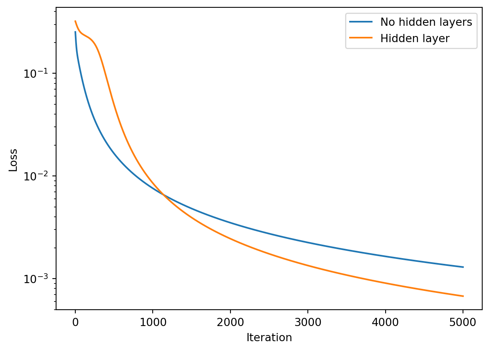
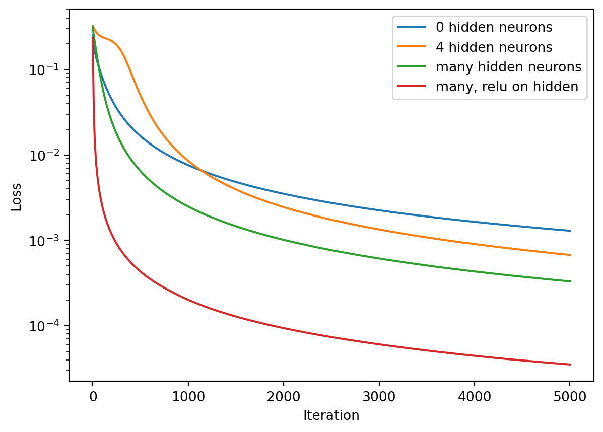

EDIT 2/20/2020: ^Ravel was later revealed to be plagiarizing content. I will look for an alternative link. The format in my (“flipped”) ML course last year involved reading things, watching brief videos, and modifying code. Siraj’s video fit the bill last year as being brief & good.
A Multi-Layer Network
Between the input \(X\) and output \(\tilde{Y}\) of the network we encountered earlier, we now interpose a “hidden layer,” connected by two sets of weights \(w^{(0)}\) and \(w^{(1)}\) as shown in the figure below. This image is a bit more complicated than diagrams one might typically encounter; I wanted to be able to show and label all the different “parts.” We will explain what the various symbols mean as we continue after the figure.
As before, the combined operation of weighted sum and nonlinear activation is referred to as a(n artificial) neuron; in the diagram above there are 4 “hidden neurons” — or equivalently “4 neurons in the hidden layer” — as well as one neuron for output. (The activations \(f^{(0)}\) and \(f^{(1)}\) may be the same, or they may be different.)
Semantics: What is a Layer?
The term “layer” in regards to neural network is not always used consistently. You may find it used in different senses by different authors.
Some users of the term will only use it with repect to weight matrices, (since these are the parts of the network which are adjusted in learning).
Others will refer to the input and (predicted) output as layers, and may or may not include the weights as layers..
Others will only count additional “hidden layers” between the inputs and outputs, and these “layers” are connected by multiple weight matrices.
Some will speak of “activation layers.” In software libraries like Keras, many different types of operations and storage are referred to as layers.
For the work we’ve done so far, we’ve had inputs and outputs connected by one weight matrix, subject to a nonlinear activation function. Is this a two-layer network made of input and output “layers,”” or is it a single-layer network, because there is only one weight matrix? What about the activation layer? This is to some degree a semantic issue which one does not need to get hung up on.
For our purposes it is convenient to refer to the inputs \(X\), the ‘activated’ hidden states \(H\), and the output \(\tilde{Y}\) as “layers”, numbering them 0, 1, and 2 respectively, and using the script notation \(\mathcal{L}^l\) to denote each layer, where the layer index \(l=0..2\), so that
This makes it easy to write the value of higher-numbered layers in terms of lower-numbed layers, i.e., \[
\mathcal{L}^{(l+1)} = f^{(l)}\left( {\mathcal{L}^{(l)}}^T \cdot w^{(l)} \right),
\] where the dot \(\cdot\) denotes a matrix product. This is often referred to as a “feed foward” operation because values are fed from left to right in the above diagram, “forward” through the network. (Backpropagation will involve feeding values from right to left.)
Response to student question(s): “What are neurons? Like, what does this mean in terms of matrices?”
This will serve as a review of the Part 1 lesson. Using the above notation, the operations from the input to the hidden layer look like this in matrix form:
…where the lines in dark red and cyan are simply to indicate sample calculations which are part of the matrix multiplication.
Figuring out dimensions of the weights
When we learned about matrix multipliation, we remarked that most of the time in machine learning, “the trick is to get the inner dimensions to match.”
Let’s say there are \(N\) different input data “points” consisting of \(M\) values each. So the input \(X\) is an \(N\times M\) matrix. And let the output \(\tilde{Y}\) be a \(NxP\) matrix (in our example, \(P=1\)). If we were just connecting \(X\) and \(\tilde{Y}\) with no hidden layer, the single weights matrix would be a \(M\times P\) matrix:
\[
(\color{blue}N\times \color{red}M)\cdot(\color{red}M\times \color{green}P) = (\color{blue}N\times \color{green}P)
\] (The nonlinear activation doesn’t change the dimensions of the matrices.)
Adding a hidden layer with \(Q\) number of neurons means we will still have \(N\) different activations for each neuron (i.e. for each datapoint), so that \(H\) is a \(N\times Q\) matrix. Thus the dimensions of \(w^0\) must “match” between these two matrices, and so \(w^0\) must be a \(M\times Q\) matrix:
\[
(\color{blue}N\times \color{red}M)\cdot(\color{red}M\times \color{purple}Q) = (\color{blue}N\times \color{purple}Q)
\] Similarly \(w^1\) must be a \(Q\times P\) matrix, and the full operation in terms of matrix dimensions is
\[
(\color{blue}N\times \color{red}M)\cdot(\color{red}M\times \color{purple}Q)\cdot(\color{purple}Q\times \color{green}P) = (\color{blue}N\times \color{green}P).
\] Compare this to the diagram above for \(P=1\), \(Q=4\).
Note: If you add bias terms to your model, you may need to remember that the number of columns in both the input \(X\) and hidden layer \(H\) are greater by one, i.e. \(\color{red}{M}\rightarrow \color{red}{M+1}\), etc.
##..a bit of code
The layers \(\mathcal{L}^l\) can be represented in Python a list called layers which has a of length 3. Similarly, our weights can be items in a list called weights. Returning to our first sample problem from Part 1:
import numpy as np%matplotlib inlineimport matplotlib.pyplot as plt# Training data: input and target X = np.array([ [0,0,1], [0,1,1], [1,0,1], [1,1,1] ])Y = np.array([[0,0,1,1]]).T# define auxiliary variablesN, M, P = X.shape[0], X.shape[1], Y.shape[1] # infer matrix shape variables from training dataY_tilde = np.zeros((N,P)) # setup storage for network output # Hidden layersQ =4# number of hidden neurons, i.e. "size of hidden layer"H = np.zeros((N,Q))# weight matricesw0 =2*np.random.random((M,Q)) -1w1 =2*np.random.random((Q,P)) -1# Make lists for layers and weightslayers = [X, H, Y_tilde]weights = [w0, w1]# Just try a sample calculation with random intialization to see how this works # Feed-forward (with linear activation):for l inrange(2): layers[l+1] = np.dot(layers[l], weights[l])print("layers [",l+1,"] =\n", layers[l+1], sep="") # sep="" just omits spaces
Generalizing this so it will do the full feed-forward will take a bit more code. We’ll leave a placeholder routine for backpropagation for now.
# Activation choicesdef sigmoid(x, deriv=False): f =1/(1+np.exp(-x))return f*(1-f) if deriv else fdef relu(x, deriv=False): return1*(x>0) if deriv else x*(x>0)# Placeholder routine to perform backprop. Will fill in laterdef update_weights(weights, layers, Y, alpha, activ):return weights # for now, it's a no-opdef fit(layers, Y, activ=[sigmoid]*2, use_bias=True, alpha=1.0, maxiter=10000):""" Routine for training using a multi-layer network layers: list of layer values, i.e. layers = [X, H, Y_tilde] Y: target output activ: list of activation functions. default = list of 2 sigmoids use_bias: Whether to include a constant offset in weighted sums alpha: learning rate maxiter: number of iterations to run """ lmax =len(layers)-1# max index of layers, also = # of weightsif use_bias: # add a column of 1's to every layer except the lastfor el inrange(lmax): new_col = np.ones((layers[el].shape[0],1)) layers[el] = np.hstack((new_col, layers[el])) # Define weights np.random.seed(1) # for reproducibility weights = [None]*lmax # allocate slots in a blank listfor el inrange(lmax): # "el" because "l" and "1" may look similar weights[el] =2*np.random.random((layers[el].shape[1], layers[el+1].shape[1])) -1 loss_hist = [] # start with an empty listforiterinrange(maxiter):# Feed-forward passfor el inrange(lmax): layers[el+1] = activ[el](np.dot(layers[el], weights[el]))# Loss monitoring diff = layers[lmax] - Y loss_hist.append( (diff**2).mean() ) # use MSE loss for monitoring# Backprop code will go here weights = update_weights(weights, layers, Y, alpha, activ)return weights, layers[lmax], loss_hist # Test this just to make sure it runslayers = [X,H,Y_tilde]weights, Y_tilde, loss_hist = fit(layers, Y, maxiter=1)for el inrange(len(weights)):print("weights[",el,"] = \n",weights[el], sep="")
…Now that we’ve achieved feed-foward operation of the network, in order to make it ‘learn’ or ‘train’, we need to compare the output value \(\tilde{Y}\) (which is the same as layers[2] by the way) to the target value, compute the gradients of the loss function, and then backpropagate in order to update all the weights!
Backpropagating: Theory
TL/DR: You can skip down to the last boxed equation of this section if math scares you. You will not be required to reproduce this. I do want to show you “where this stuff comes from”, but if you find the derivation too intimidating, you can still progress in the course just fine.
Let’s review how we got the gradients for \(w^{(1)}\) in Part 2, denoting weighted sums by “\(S\)”, e.g. \(S^l = \mathcal{L}^l\cdot w^l\), we just used the Chain Rule: \[
{\partial L\over\partial w^{(1)}} =
\color{blue}
{\partial L \over\partial \mathcal{L}^{(2)}}
\color{green}
{\partial \mathcal{L}^{(2)} \over\partial S^{(1)}}
\color{red}
{\partial S^{(1)} \over\partial w^{(1)}}
\] We’ll define the first partial derivative to be \(\delta^{(2)}\), which works out (given our choice of \(L\) from Part 2) to be \[\color{blue}{
{\partial L \over\partial \mathcal{L}^{(2)}}
=\delta^{(2)} = \tilde{Y}-Y},\] i.e., it is the error in the final ouput. The next partial derivative (in green) is just the derivative of the activation function \(f\), and the last partial derivative is just \(\color{red}{\mathcal{L}^{(1)}}\), so as we saw in the previous lesson, we can write this ‘schematically’ (i.e. not quite as a properly-set-up matix equation yet) as \[
{\partial L\over\partial w^{(1)}} =
\color{blue}{\delta^{(2)}}
\color{green} {f^{(1)\prime} }
\color{red}{\mathcal{L}^{(1)}}
\] whereas in proper form it will take on this ordering as a matrix equation: \[
\boxed{
{\partial L\over\partial w^{(1)}} =
{\mathcal{L}^{(1)}}^T \cdot
{\delta^{(2)}}
{f^{(1)\prime}}
}.
\]
To get the gradients for \(w^{(0)}\), we can make use of a similar “\(\delta\)” notation if we’re careful in how we define a new \(\delta^{(1)}\). Let’s write out the chain rule, and put parentheses around a particular group of terms for later:
\[
{\partial L\over\partial w^{(0)}} =
\color{blue}{
\left(
{\partial L \over\partial \mathcal{L}^{(2)}}
{\partial \mathcal{L}^{(2)} \over\partial S^{(1)}}
{\partial S^{(1)} \over\partial \mathcal{L}^{(1)}}
\right)}
\color{green}
{\partial \mathcal{L}^{(1)} \over\partial S^{(0)}}
\color{red}
{\partial S^{(0)} \over\partial w^{(0)}}
\] In a manner similar to what we did above, this can be written as \[
{\partial L\over\partial w^{(0)}} =
\color{blue}{
\left(\delta^{(2)}f^{(1)\prime}w^{(1)}\right)}
\color{green}{f^{(0)\prime}}
\color{red}{\mathcal{L^{(0)}}}
\] We now define the terms in parentheses as \(\delta^{(1)}\)
\[
\color{blue}{
\delta^{(1)} = \delta^{(2)}f^{(1)\prime}w^{(1)}
},
\] …which is kind of like “the error in the hidden layer,” or like the final solution error projected backward into the hidden layers via our (momentarily fixed) weights \(w^{(1)}\).
Then our gradients for \(w^{(0)}\) take on a similar form as the gradients for \(w^{(1)}\). ‘Schematically’ this looks like \[
{\partial L\over\partial w^{(0)}} =
\color{blue}{\delta^{(1)}}
\color{green}{f^{(0)\prime}}
\color{red}{\mathcal{L^{(0)}}}
\] and in proper matrix form this is \[
\boxed{
{\partial L\over\partial w^{(0)}} =
{\mathcal{L}^{(0)}}^T \cdot
{\delta^{(1)}}
{f^{(0)\prime}}
},
\] i.e., the same form as the preceding layer, just “back” one layer. We are backpropagating the errors \(\delta^{(l)}\) from one layer to another in order to update the weights.
The weights are then updated as before, except now we will write this ‘generically’ for all weights and layers using the index \(l\): \[
\boxed{
w^{(l)} := w^{(l)} - \alpha {\mathcal{L}^{(l)}}^T \cdot
{\delta^{(l+1)}}
{f^{(l)\prime}}
},
\] where \[
\delta^{(l+1)} = \left\{ \begin{array}{l}
\tilde{Y}-Y,\ \ \ &\ &l+1=l_{max} \ \ \ \ ({\rm e.g.} \ l_{max}=2)\\
\delta^{(l+2)}f^{(l+1)\prime}\cdot {w^{(l+1)}}^T, &\ &l+1 < l_{max}
\end{array}\right.
\]
Writing the Backprop Code
Now we’ll use the above analysis to replace the update_weights() function from earlier.
def update_weights(weights, layers, Y, alpha, activ):""" Backprop routine, for arbitrary numbers of layers, assuming weights & activations are defined Inputs: weights: list of arrays of weights between each layer layers: list of arrays of layer values (post-activation function) Y: target output alpha: learning rate activ: list of activation functions for each (non-input) layer Outputs: weights (updated) """ lmax =len(layers) -1# a useful variableassertlen(weights)==lmax # make sure number of weights match upassertlen(activ) >= lmax # make sure we defined enough activations for the layers delta = layers[lmax] - Y # error between output and targetfor el inrange(lmax-1, -1, -1): # Count backwards to layer zero fprime = activ[el](np.dot(layers[el], weights[el]), deriv=True) # deriv of activation weights[el] -= alpha * np.dot( layers[el].T, delta*fprime ) # gradient descent step delta = np.dot(delta*fprime, weights[el].T) if (el>0) elseNone# setup delta for next pass in loopreturn weights # Let's run it!layers = [X, H, Y_tilde]alpha =0.1maxiter=5000weights, Y_tilde, loss_hist_2weights = fit(layers, Y, alpha=alpha, maxiter=maxiter)# compare against a 1-weight (no hidden layer) network:layers = [X, Y_tilde]weights, Y_tilde, loss_hist_1weight = fit(layers, Y, alpha=alpha, maxiter=maxiter)# Plot the loss historyplt.semilogy(loss_hist_1weight, label="No hidden layers")plt.semilogy(loss_hist_2weights, label="Hidden layer")plt.legend()plt.xlabel("Iteration")plt.ylabel("Loss")plt.show()

# Let's add more hidden neuronsQ =50# number of hidden neurons, i.e. "size of hidden layer"H = np.zeros((N,Q))layers = [X, H, Y_tilde]weights, Y_tilde, loss_hist_many = fit(layers, Y, alpha=alpha, maxiter=maxiter)# try a relu activation for the hidden layer (leave output activ as sigmoid!)weights, Y_tilde, lhm_relu = fit(layers, Y, alpha=alpha, activ=[relu,sigmoid], maxiter=maxiter)plt.semilogy(loss_hist_1weight, label="0 hidden neurons")plt.semilogy(loss_hist_2weights, label="4 hidden neurons")plt.semilogy(loss_hist_many, label="many hidden neurons")plt.semilogy(lhm_relu, label="many, relu on hidden")plt.legend()plt.xlabel("Iteration")plt.ylabel("Loss")
Text(0, 0.5, 'Loss')

Solving XOR
Now let’s revisit the “XOR” problem that a single neuron couldn’t handle.
\[ \overbrace{
\left[ {\begin{array}{cc}
0 & 0 \\
0 & 1 \\
1 & 0 \\
1 & 1 \\
\end{array} } \right]
}^{X} \rightarrow
\overbrace{
\left[ {\begin{array}{c}
0 \\
1 \\
1 \\
0 \\
\end{array} } \right]
}^Y.
\] With our multi-layer network, we can solve this. Note that while an exact solution to the XOR problem exists using only 2 hidden neurons and linear activations, a program can still have a hard time finding a good approximation via gradient descent, and we use 20 hidden neurons to assist, as follows:
X = np.array([[0,0],[0,1],[1,0],[1,1]])Y = np.array([[0,1,1,0]]).TY_tilde =0*Y # Just allocate some storageH = np.zeros((N,20)) weights, Y_tilde, loss_hist_xor = fit([X,H,Y_tilde], Y, activ=[relu,sigmoid], alpha=0.5)print("Prediction Y_tilde =",Y_tilde.T)print("Target Y (correct answer) =",Y.T)plt.xlabel("Iteration")plt.ylabel("Loss")plt.loglog(loss_hist_xor)#print("weights = ",weights)
Same thing using neural network libraries Keras & PyTorch.
Since most of the time we won’t be writing neural network systems “from scratch, by hand” in numpy, let’s take a look at similar operations using libraries such as Keras or PyTorch.
Keras version
Keras is so simple to set up, it’s easy to get started. This is what the previous example for XOR looks like “in Keras”:
import kerasfrom keras.models import Sequentialfrom keras.layers import Dense, Activationfrom keras.optimizers import Adam# training dataX = np.array([[0,0],[0,1],[1,0],[1,1]])Y = np.array([[0,1,1,0]]).T# specify modeln_hidden =20model = Sequential([ Dense(n_hidden, input_shape=(X.shape[1],), activation='relu'), Dense(1, activation='sigmoid')])# choices for loss and optimization methodopt = Adam(lr=alpha) # We'll talk about optimizer choices latermodel.compile(optimizer=opt, loss='binary_crossentropy',metrics=['binary_accuracy'])# training iterationsmodel.fit(X, Y, epochs=maxiter, batch_size=1, verbose=0)print("\nY_tilde = \n", model.predict(X) )
WARNING:absl:At this time, the v2.11+ optimizer `tf.keras.optimizers.Adam` runs slowly on M1/M2 Macs, please use the legacy Keras optimizer instead, located at `tf.keras.optimizers.legacy.Adam`.
WARNING:absl:`lr` is deprecated in Keras optimizer, please use `learning_rate` or use the legacy optimizer, e.g.,tf.keras.optimizers.legacy.Adam.
WARNING:absl:There is a known slowdown when using v2.11+ Keras optimizers on M1/M2 Macs. Falling back to the legacy Keras optimizer, i.e., `tf.keras.optimizers.legacy.Adam`.
Keras can get a better appoximation than we did because of the choice of optimizer algorithm. We’ll talk about optimization algorithms (refinements to gradient descent) another time.
PyTorch version
Unlike Keras, PyTorch does not have any “training wheels.” You have to specify a number of the operations yourself. It’s helpful to have a template to start from, such as the following example for our XOR problem.
import torch # it's 'PyTorch' but the package is 'torch'device = torch.device('cpu') # handy for changing to 'cuda' in GPU runtimes later!torch.manual_seed(1) # for reproducibility# training dataX = np.array([[0,0],[0,1],[1,0],[1,1]],dtype=np.float32)Y = np.array([[0,1,1,0]],dtype=np.float32).T# re-cast data as PyTorch variables, on the device (CPU or GPU) were calc's are performedx, y = torch.tensor(X).to(device), torch.tensor(Y).to(device) # specify model (similar to Keras but not quite)n_hidden =20# number of hidden neuronsmodel = torch.nn.Sequential( torch.nn.Linear(X.shape[1], n_hidden), torch.nn.ReLU(), torch.nn.Linear(n_hidden, 1), torch.nn.Sigmoid() ).to(device)# choices for loss and optimization methodloss_fn = torch.nn.BCELoss() # binary cross-entropy lossoptimizer = torch.optim.Adam([{'params': model.parameters()}], lr=alpha)# training iterationsloss_hist_pytorch = []foriterinrange(maxiter): optimizer.zero_grad() # set gradients=0 before calculating more y_tilde = model(x) # feed-forward step loss = loss_fn(y_tilde, y) # compute the loss loss_hist_pytorch.append(loss.item()) # save loss for plotting later loss.backward() # compute gradients via backprop optimizer.step() # actually update the weights# print and plot our resultsprint("\nY_tilde = \n", y_tilde.cpu().data.numpy() )plt.xlabel("Iteration")plt.ylabel("Loss")plt.loglog(loss_hist_pytorch)
Using the \(X\) and \(Y\) arrays for from previous exercices with the 7-segment display, we’ll explore the effects of adding hidden neurons and different activation functions. Using the code template that follows below,…
A. Explore hidden layer sizes & activations
Write code for a new activation function: \(\tanh(x)\) and its derivative. Note: there is already placeholder code for this in the template below
Set training data to be that of the 7-segment display.
Choose (for yourself) a single learning rate (e.g. $=$0.5), and a standard number of iterations (e.g. 10000).
Then compare results for multiple networks (all with softmaxsigmoid activation on the end): 1. A single hidden layer with 20 neurons and (for the hidden layer)… - sigmoid activation - relu activation - tanh activation
A single hidden layer with 100 neurons and (for the hidden layer)…
sigmoid activation
relu activation
tanh activation
B. Explore multiple hidden layers
Now use two hidden layers, H and H2 with 10 neurons each, and experiment to find the best combination of activations, and best choice of learning rate that gives you the lowest loss at the end of your chosen number of iterations. Check that your predicted output is as you expect.
Assignment:
Upload a text file of the code for your “winning” entry for #3 to Blackboard. Use the code below as a template.
## TEMPLATE CODE. Scroll down to "MAKE YOUR CHANGES BELOW", belowimport numpy as npimport matplotlib.pyplot as plt### LEAVE THIS UNCHANGED# First, let's repeat the sigmoid(), relu(), update_weights() and fit() routines# already defined, so we have a'standalone' code and can easily make changes# Activation choicesdef sigmoid(x, deriv=False): f =1/(1+np.exp(-x))return f*(1-f) if deriv else fdef relu(x, deriv=False): return1*(x>0) if deriv else x*(x>0)# Backpropagation routinedef update_weights(weights, layers, Y, alpha, activ): lmax =len(layers) -1# a useful variableassertlen(weights)==lmax # make sure number of weights match upassertlen(activ) >= lmax # make sure we defined enough activations for the layers delta = layers[lmax] - Y # error between output and targetfor el inrange(lmax-1, -1, -1): # Count backwards to layer zero fprime = activ[el](np.dot(layers[el], weights[el]), deriv=True) # deriv of activation weights[el] -= alpha * np.dot( layers[el].T, delta*fprime ) # gradient descent step delta = np.dot(delta*fprime, weights[el].T) if (el>0) elseNone# setup delta for next pass in loopreturn weights # Routine for training via gradient descentdef fit(layers, Y, activ=[sigmoid]*2, use_bias=True, alpha=1.0, maxiter=10000): lmax =len(layers)-1# max index of layers, also = # of weightsif use_bias: # add a column of 1's to every layer except the lastfor el inrange(lmax): new_col = np.ones((layers[el].shape[0],1)) layers[el] = np.hstack((new_col, layers[el])) # Define weights np.random.seed(1) # for reproducibility weights = [None]*lmax # allocate slots in a blank listfor el inrange(lmax): # "el" because "l" and "1" may look similar weights[el] =2*np.random.random((layers[el].shape[1], layers[el+1].shape[1]))-1 loss_hist = [] # start with an empty listforiterinrange(maxiter):# Feed-forward passfor el inrange(lmax): layers[el+1] = activ[el](np.dot(layers[el], weights[el])) Y_tilde = layers[lmax]# Loss monitoring diff = Y_tilde - Y loss_hist.append( (diff**2).mean() ) # use MSE loss for monitoring# Backprop code will go here weights = update_weights(weights, layers, Y, alpha, activ)return weights, Y_tilde, loss_hist ##### END OF PART TO LEAVE UNCHANGED#####--------------- MAKE YOUR CHANGES BELOW ------------############### define the tanh activation functiondef tanh(x, deriv=False):if deriv:pass# *** Students: replace 'pass' with what the derivative should bereturn np.tanh(x)## Students: replace X, Y with 7-segment data insteadX = np.array([[0,0],[0,1],[1,0],[1,1]],dtype=np.float32)Y = np.array([[0,1,1,0]],dtype=np.float32).TY_tilde = np.copy(Y) # Just allocates some storage for Y_tilde## Hidden layers: Students: Change Q, the number of hidden neurons, as neededQ =10N = X.shape[0] # this just grabs the number of rows in XH = np.zeros((N,Q)) H2 = np.zeros((N,Q)) # extra hidden layer, might not be used## Students: change this as instructedlayers = [X, H, Y_tilde] # later, add another layer H2 when instructedactiv = [sigmoid, sigmoid, sigmoid] # change the first (2) activation(s) as instructedalpha =0.5# play around with this## LEAVE THIS PART UNCHANGEDweights, Y_tilde, loss_hist = fit(layers, Y, activ=activ, alpha=alpha)np.set_printoptions(formatter={'float': lambda x: "{0:0.2f}".format(x)}) # 2 sig figsprint("Prediction Y_tilde =\n",Y_tilde.T)print("Target Y (correct answer) =\n",Y.T)plt.xlabel("Iteration")plt.ylabel("Loss")plt.loglog(loss_hist)
Now that you’ve built up some experience with reading digits, let’s move to handwritten digits! This is a problem usually solved with an architecture called a Convolutional Neural Network, but our ordinary feed-forward network can do it too.
The MNIST database of handwritten digits is a classic dataset that every ML student works on. It consists of a large number images of handwritten digits only 28x28 pixels in size. We will “flatten” these into a row of 784 columns, and output a \(\tilde{Y}\) of one-hot-encoded vectore just like we did for the output of the 7-segment display (same digits, 0 to 9!).

 …where the lines in dark red and cyan are simply to indicate sample calculations which are part of the matrix multiplication.
…where the lines in dark red and cyan are simply to indicate sample calculations which are part of the matrix multiplication.